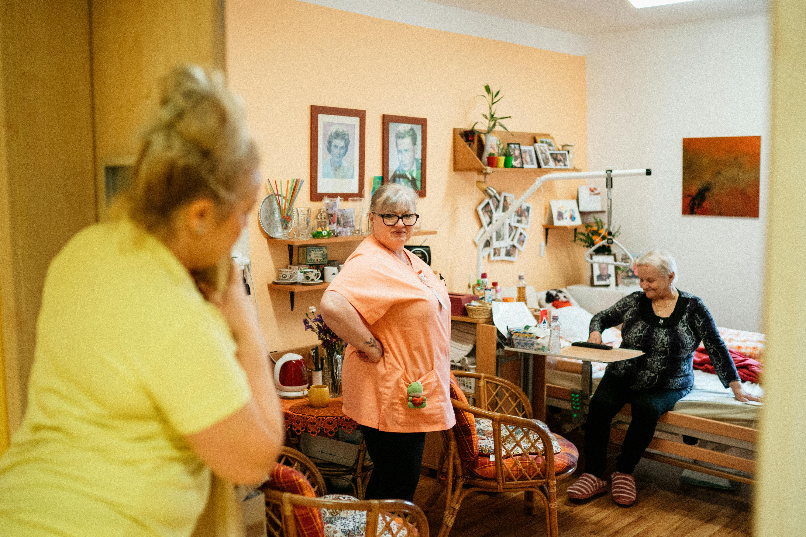

One connected system for safety, connection, and wellness.
SeniorConnex pulls every part of senior care into a single, shared picture, so families, caregivers, and care teams all see the same thing at the same time, and the right people are alerted the moment it matters.

Never miss the moment that matters.
A biometric watch and contactless radar work together to recognize a real fall, not a sit-down, and escalate by text in seconds, to exactly the person who should hear it first.
- Fall detection from fused watch + radar signals
- Inactivity and bed-exit alerts for the quiet hours
- SMS escalation in under five seconds, with two-way acknowledgment
- Around-the-clock monitoring that's silent until it counts

Keep everyone close, on the same page.
A bedside tablet makes video calls a single tap, big buttons, large type, no menus. Behind the scenes, caregivers and family share one view, so updates and handoff notes never get lost.
- One-tap video calls designed for the person being cared for
- Shared updates across family, caregivers, and care teams
- Shift handoff notes that sync automatically
- One shared picture, everyone sees the same thing

Health you can read at a glance.
Heart rate, blood oxygen, respiratory rate, temperature, and daily activity, all shown in plain, reassuring language. Gentle enough for every day, detailed enough for a clinician.
- Continuous vitals in simple, understandable terms
- Activity, rest, and sleep trends over time
- Early signals that something may be changing
- Shareable with clinicians when it helps
From the box at the door to your first quiet night.
The whole thing, unboxing to first live alert, takes about a day.
We scope your care circle
A real person helps you decide who's connected and who gets alerted first.
Kit arrives pre-paired
Watch, radar, and tablet show up ready. Plug in and slip on the watch, no setup wizards.
First readings in minutes
Vitals and presence light up across the circle with a friendly welcome notification.
Alerts go live day one
Falls and health changes escalate by text in seconds, routed by your policy.
Built like the clinical software it is.
0/7
Continuous monitoring
<0s
Fall alert escalation
0-bit
AES encryption
HIPAA
Compliant by design